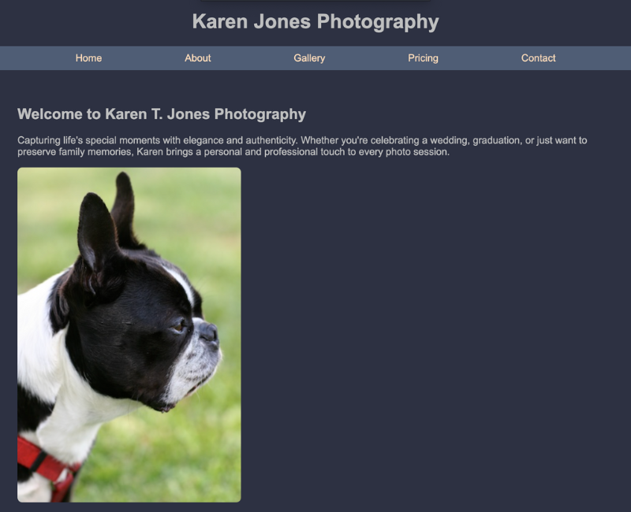

Peer Review Evaluation Two
Karen Jones Photography - Matthew Jones
Design
- Contrast: The contrast in the website is good, it is easy on the eyes and visually appealing. The colors used help portray a sense of elegance and professionalism. The use of different colors also helps distinguish the nav bar, heading elements, and body text.
- Repetition The repetition throughout the site allows for an easy way to navigate the site. There is a strong sense of unity throughout the site. The use of high quality images throughout the site displays the service provided. This helps to reinforce the brand. The only small issues is that the footer is not set towards the bottom and can look a bit awkward in certain places.
- Alignment The alignment in the website allows for an easy to use nav bar and form submission. There is a sense of structure throughout the website. The only potential issue could be from the gallery where the images tend to be different sizes, but due to the nature of photography this is to be expected.
- Proximity The proximity between everything creates a quality feel. The easy to use nav bar helps when first visiting the website. All of the form elements are also in close proximity which helps with styling.
Elements
- Basic Page Elements: The page includes the basic web elements such as a header, main, footer, and a nav bar. The website also contains the name of the client/business. There is a clear distinction between header and heading tags. The main starts with the name of page. The branding is consistent throughout the website.
Assignment Requirements
- Assignment specific requirements: All of the requirements are meet for this page and the project assignment requirements.
Final Notes
- Conclusion: The website overall looks great. There isn't any problems that need to be fixed. There is only a small critique in some of the site's pages. Some of the pages seem to have a bit of unused real estate. Everything is fulfilled according to the assignment rubric and basic course checklist.